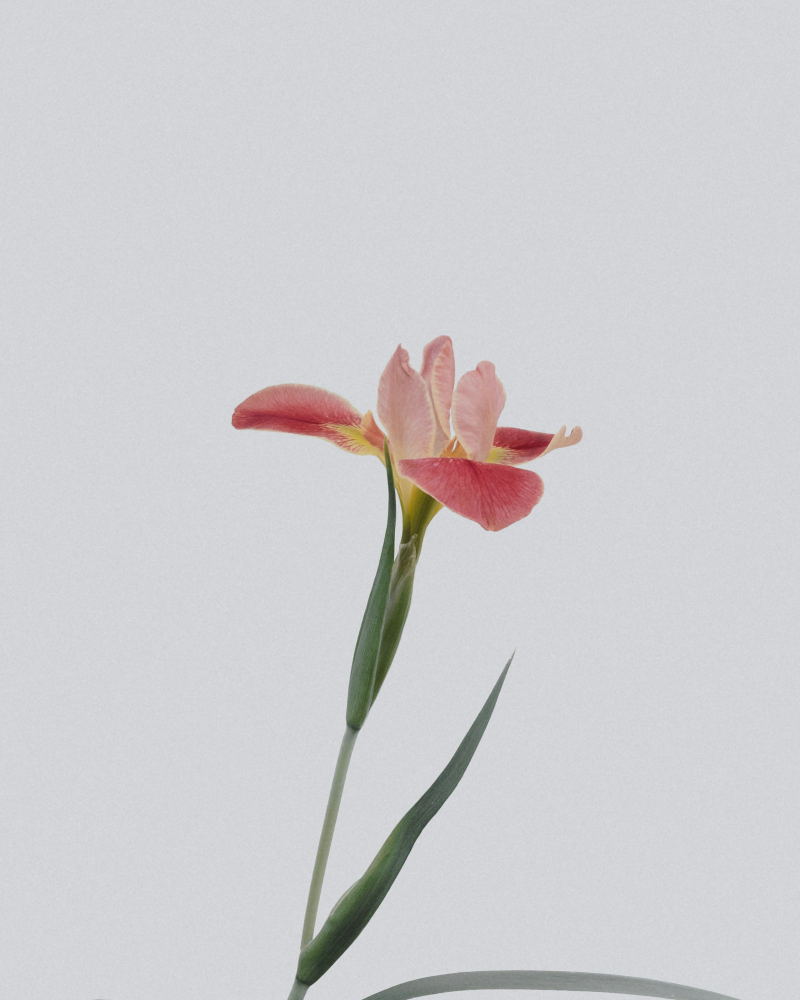
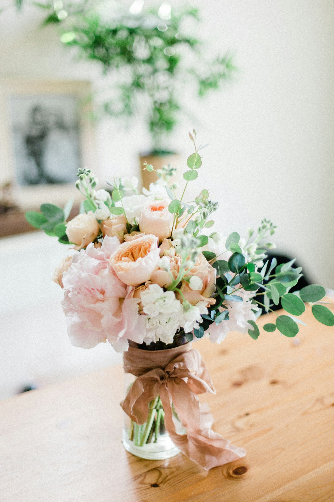

HANGULATKÉP01
Virágot ajándékba
Vágott virágok egy személyes gesztushoz. Az aktuális kínálatról érdeklődjön nálunk.
BUDENZ VIRÁG UDVAR
Apró figyelmesség. Nagy pillanat.
Találja meg hozzá a virágot.
Budenz út 3/B
Hangulatkép, nem az üzlet saját alkotása.EGY KIS TERMÉSZET. EGY SZEMÉLYES GESZTUS.
Virág egy kedves embernek. Növény egy otthonba. Dekoráció egy ünnephez. A Budenz Virág Udvarban vágott virágokkal, cserepes növényekkel és az alkalomhoz illő kiegészítőkkel találkozhat.
A VIRÁGOK VILÁGA

HANGULATKÉPVágott virágok egy személyes gesztushoz. Az aktuális kínálatról érdeklődjön nálunk.
Cserepes dísz- és szobanövények, palánták, örökzöldek. Kaspók, kosarak és kerámiák melléjük.

HANGULATKÉPEsküvők és más rendezvények virágdekorációja. Az elképzelésekről személyesen is egyeztethetünk.
Ajándéktárgyak is helyet kapnak a kínálatban. A fotók inspirációként szolgálnak; a bemutatott virágok és növények elérhetőségéről kérjük, érdeklődjön.
AMIKOR AZ ALKALOM KÜLÖNLEGES
Esküvők és egyéb rendezvények teljes körű virágdekorációjának elkészítése. Meséljen a helyszínről, a színekről és arról, milyen hangulatot képzelt el.
Beszéljünk az alkalomrólA lehetőségekről, a területről és a feltételekről kérjük, egyeztessen telefonon.
AHOGY EGY ÉRZÉS FORMÁT ÖLT
Tovább az elérhetőségekhez ↓Van, amit nehéz szavakba önteni.
Egy virág jó kezdet lehet.
BUDENZ VIRÁG UDVAR · BUDAPEST II.
Érdeklődjön a kínálatról, egy alkalom dekorációjáról
vagy a virágküldés lehetőségeiről.
Az aktuális nyitvatartásról és a személyes egyeztetés lehetőségeiről kérjük, érdeklődjön telefonon.